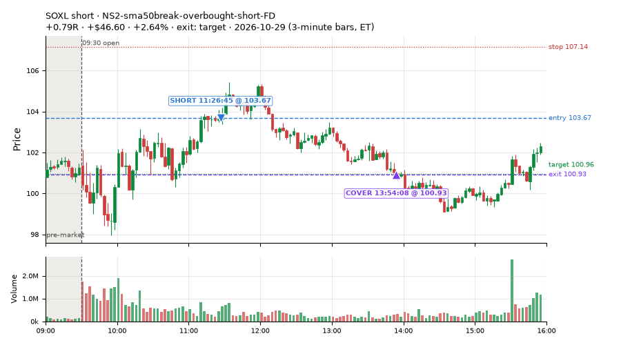
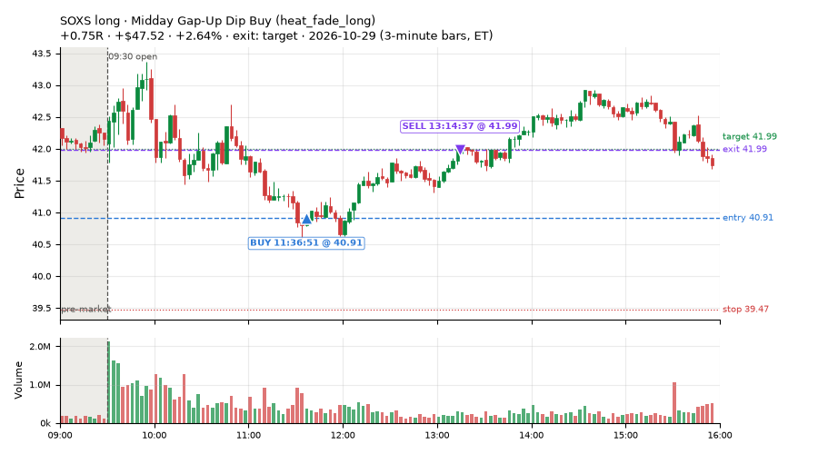
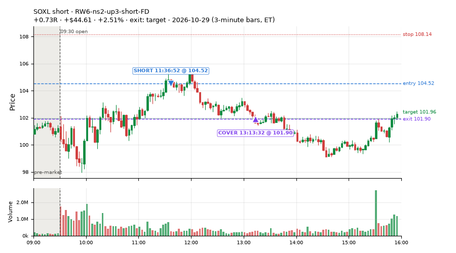
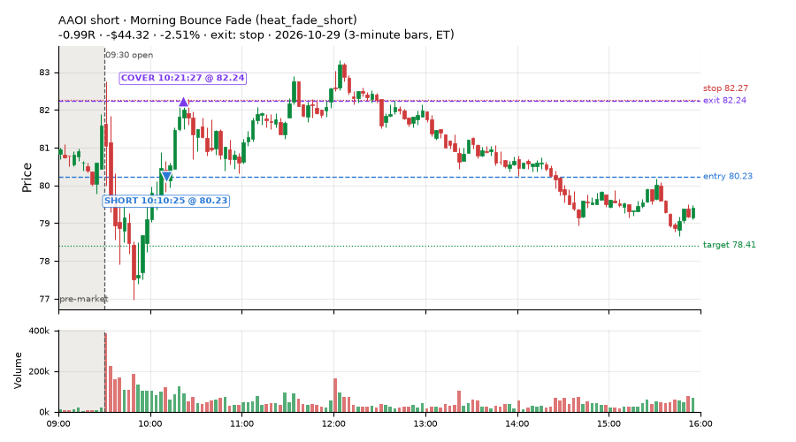
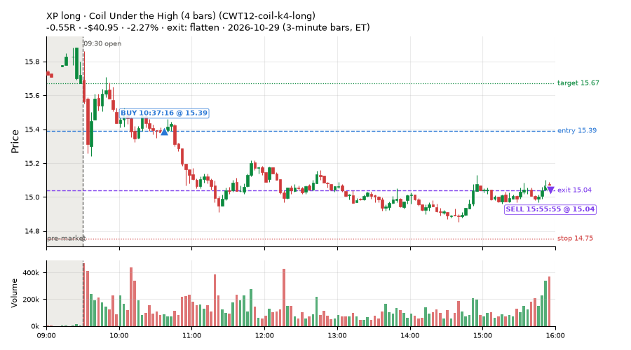
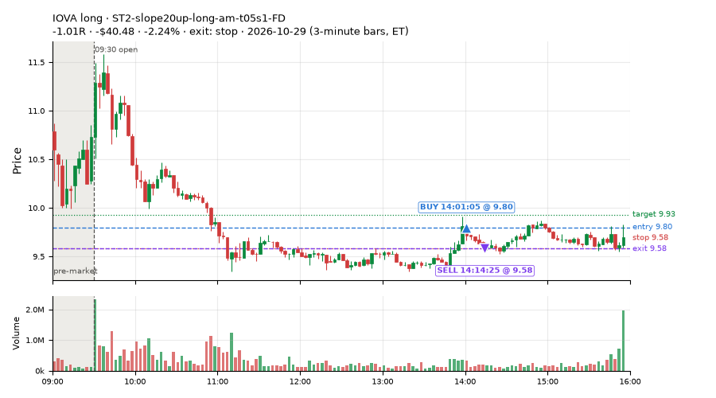
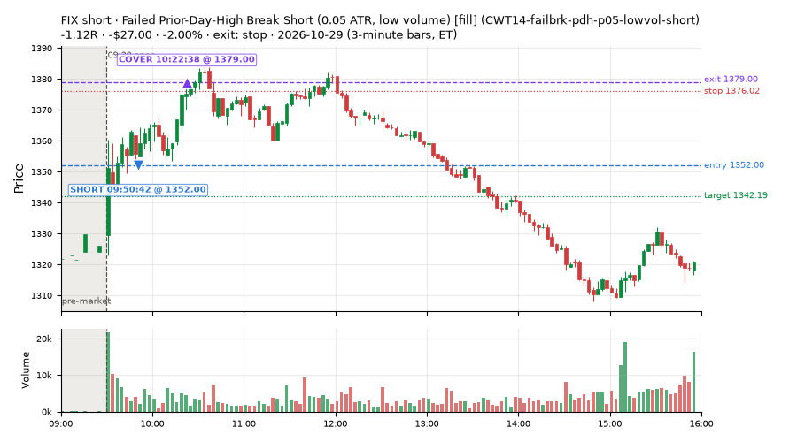
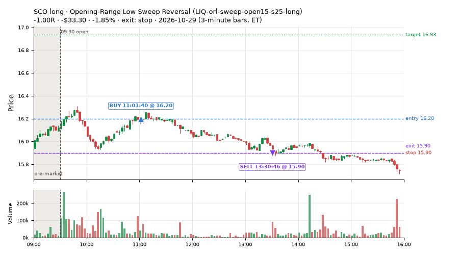

401 trades · win rate 61% · P/L $-188.35
PROBATION: no live setup has passed both locked test periods. 10 owner-directed setups added 2026-10-08 (MarcoFlow top 5 + 5 new), untested live. RW6G1 (RW6 + VWAP band guard) added 2026-10-09, probation.

| Symbol | Setup | Side | In | Out | Entry | Exit | Exit reason | % gained | P/L |
|---|---|---|---|---|---|---|---|---|---|
| SOXL | NS2-sma50break-overbought-short-FD | short | 11:26 | 13:54 | 103.67 | 100.93 | target | +2.64% | $46.60 |
| SOXS | Midday Gap-Up Dip Buy (heat_fade_long) | long | 11:36 | 13:14 | 40.91 | 41.99 | target | +2.64% | $47.52 |
| SOXL | RW6-ns2-up3-short-FD | short | 11:36 | 13:13 | 104.52 | 101.90 | target | +2.51% | $44.61 |
| Symbol | Setup | Side | In | Out | Entry | Exit | Exit reason | % lost | P/L |
|---|---|---|---|---|---|---|---|---|---|
| AAOI | heat_fade_short | short | 10:10 | 10:21 | 80.23 | 82.24 | stop | -2.51% | $-44.32 |
| XP | CWT12-coil-k4-long | long | 10:37 | 15:55 | 15.39 | 15.04 | flatten | -2.27% | $-40.95 |
| IOVA | ST2-slope20up-long-am-t05s1-FD | long | 14:01 | 14:14 | 9.80 | 9.58 | stop | -2.24% | $-40.48 |
| FIX | CWT14-failbrk-pdh-p05-lowvol-short | short | 09:50 | 10:22 | 1352.00 | 1379.00 | stop | -2.00% | $-27.00 |
| SCO | LIQ-orl-sweep-open15-s25-long | long | 11:01 | 13:30 | 16.20 | 15.90 | stop | -1.85% | $-33.30 |








Signal to fill: median 1s, 90th percentile 3s (401 trades). Bars close each minute; the order follows the bar close.
Best excursion (MFE): median 0.45R; worst (MAE) median 0.51R. 27% of trades never got +0.25R in our favour; 8 reached +1R and still closed at or below 0.
| Symbol | Setup | Best R | Worst R | Closed R |
|---|---|---|---|---|
| BUG | CWT09-gapdn-vwaploss-g5-short | +4.80 | -1.15 | -1.36 |
| BNS | CWT12-coil-k6-long | +1.68 | -1.03 | -1.03 |
| SOXL | CWT09-gapdn-bounce-g5-lowerhalf-short | +1.50 | -1.17 | -1.14 |
| SYF | CWT12-coil-k6-long | +1.29 | -1.03 | -1.06 |
| GOOGN | CWT09-gapdn-bounce-g5-lowerhalf-short | +1.32 | -1.03 | -1.00 |
| Entry time | Trades | Win | Avg R | P/L |
|---|---|---|---|---|
| 09:50-10:30 | 113 | 63% | -0.05 | $-184.70 |
| 10:30-11:30 | 174 | 56% | -0.06 | $-56.76 |
| 11:30-13:00 | 58 | 76% | +0.24 | $271.19 |
| 13:00-14:00 | 12 | 58% | -0.23 | $-85.41 |
| 14:00-16:00 | 44 | 55% | -0.09 | $-132.67 |
| Setup | Trades | Win | Avg R | Adj R (net of SPY) | P/L |
|---|---|---|---|---|---|
| Gap-Down Bounce Rejection Short (5% gap) (CWT09-gapdn-bounce-g5-lowerhalf-short) | 18.0 | 39% | -0.24 | -0.25 | $-112.70 |
| Gap-Down VWAP Loss Short (5% gap) (CWT09-gapdn-vwaploss-g5-short) | 9.0 | 33% | -0.25 | -0.18 | $1.72 |
| Coil Under the High (4 bars) (CWT12-coil-k4-long) | 52.0 | 60% | -0.12 | -0.08 | $-100.75 |
| Coil Under the High (6 bars) (CWT12-coil-k6-long) | 13.0 | 15% | -0.72 | -0.67 | $-76.24 |
| Stretched Above VWAP Fade (CWT13-vwapstretch-z05-short) | 5.0 | 40% | -0.25 | -0.50 | $12.72 |
| Failed Opening-Range-Low Break Long (0.05 ATR) [fill] (CWT14-failbrk-orl-p05-long) | 58.0 | 81% | +0.19 | +0.17 | $64.67 |
| Failed Opening-Range-Low Break Long (0.05 ATR, low volume) [fill] (CWT14-failbrk-orl-p05-lowvol-long) | 47.0 | 83% | +0.19 | +0.18 | $99.80 |
| Failed Opening-Range-Low Break Long (0.1 ATR) [fill] (CWT14-failbrk-orl-p10-long) | 20.0 | 45% | -0.39 | -0.48 | $-97.26 |
| Failed Opening-Range-Low Break Long (low volume) (CWT14-failbrk-orl-p10-lowvol-long) | 21.0 | 67% | -0.07 | -0.11 | $12.39 |
| Failed Prior-Day-High Break Short (0.05 ATR, low volume) [fill] (CWT14-failbrk-pdh-p05-lowvol-short) | 16.0 | 69% | +0.00 | -0.02 | $-9.02 |
| Failed Prior-Day-High Break Short (low volume) (CWT14-failbrk-pdh-p10-lowvol-short) | 18.0 | 72% | +0.12 | +0.12 | $20.83 |
| Failed Prior-Day-High Break Short (0.1 ATR) [fill] (CWT14-failbrk-pdh-p10-short) | 27.0 | 74% | +0.19 | +0.13 | $79.65 |
| Opening-Range Low Sweep Reversal (LIQ-orl-sweep-open15-s25-long) | 7.0 | 57% | -0.02 | +0.00 | $-2.95 |
| MF1-945-flowsell-vwapup-FD | 5.0 | 60% | +0.93 | +0.81 | $16.49 |
| NS2-sma50break-overbought-short-FD | 18.0 | 22% | -0.44 | -0.34 | $-88.49 |
| RW2-exhaustion-noon-adv150-short-FD | 19.0 | 37% | -0.18 | -0.19 | $-52.03 |
| RW6-ns2-up3-short-FD | 8.0 | 38% | -0.12 | -0.08 | $6.32 |
| ST2-slope20up-long-am-t05s1-FD | 5.0 | 80% | +0.05 | -0.00 | $-6.25 |
| Midday Gap-Up Dip Buy (heat_fade_long) failed Apr-Jun holdout: -0.138R/trade over 1043 trades | 4.0 | 100% | +0.47 | +0.46 | $62.52 |
| heat_fade_long-FD | 4.0 | 75% | +0.23 | +0.06 | $5.24 |
| Morning Bounce Fade (heat_fade_short) failed Apr-Jun holdout: -0.015R/trade over 1420 trades | 9.0 | 56% | +0.04 | -0.07 | $-26.33 |
| heat_fade_short-FD | 18.0 | 44% | -0.03 | -0.13 | $1.33 |
Market direction (SPY, beta 1) accounted for $-66.41 of today's $-188.35; the rest ($-121.94) came from the setups themselves. Avg R net of SPY: -0.04 (incl. a hedge leg's cost; report only).
24 setups live today. Today: 978 signals, 401 taken, 47 lost because another setup held the symbol (5%). Since 2026-10-21 (7 sessions): 4888 signals, 2186 taken, 255 lost to other setups (5%). Peak open positions today 137 of 200 slots. Earnings blackout removed 1490 symbols before scanning.
Simulated playing time (not live): 2691 what-if trades of signals not taken, avg -0.06R, 58% winners; of them 255 lost to another setup (avg -0.12R).
Crowded out: NS2-sma50break-overbought-short, heat_fade_long-FD · Starved: ST1-ordn-long-pm-t05s1-FD, MF1-945-flowsell-vwapup-FD, heat_fade_long, heat_fade_short, heat_fade_short-FD
| Prio | Setup | Today sig / taken | Sessions | Signals / taken / trades | Taken/day | Expected/day | Lost to other setups | Lost to (setup n) | Top skip reasons | SIMULATED: not-taken n / avg R / win | Verdict |
|---|---|---|---|---|---|---|---|---|---|---|---|
| 1 | ST1-ordn-long-pm-t05s1-FD ST1-ordn-long-pm-t05s1-FD | 0 / 0 | 7 | 10 / 6 / 6 | 0.86 | 3.49 | 0 | – | spread / quote / size 3, broker rejected 1 | 4 / +0.03R / 50% | starved 0.86 entries/day vs ~3.49 expected |
| 2 | RW6-ns2-up3-short-FD RW6-ns2-up3-short-FD | 13 / 8 | 7 | 45 / 22 / 22 | 3.14 | 7.12 | 1 | CWT09-gapdn-bounce-g5-lowerhalf-short 1, RW6-ns2-up3-short-FD 1, NS2-sma50break-overbought-short-FD 1 | daily loss cap 9, not shortable / shorts off 9, spread / quote / size 4 | 23 / +0.41R / 78% | ok 15.7 entries/week |
| 3 | NS2-sma50break-overbought-short-FD NS2-sma50break-overbought-short-FD | 24 / 18 | 7 | 86 / 47 / 47 | 6.71 | 17.08 | 1 | CWT12-coil-k4-long 1 | daily loss cap 19, spread / quote / size 10, not shortable / shorts off 9 | 39 / +0.35R / 69% | ok 33.6 entries/week |
| 4 | Big Gainer Average Reclaim Fade NS2-sma50break-overbought-short | 9 / 0 | 7 | 40 / 6 / 6 | 0.86 | 5.74 | 23 | NS2-sma50break-overbought-short-FD 23, RW6-ns2-up3-short-FD 7 | symbol held by another setup 23, spread / quote / size 6, not shortable / shorts off 5 | 34 / +0.11R / 59% | crowded-out 23 of 40 signals (57%) lost to setups already holding the symbol |
| 5 | MF1-945-flowsell-vwapup-FD MF1-945-flowsell-vwapup-FD | 16 / 5 | 7 | 81 / 33 / 33 | 4.71 | 23.94 | 2 | CWT12-coil-k6-long 1, CWT14-failbrk-orl-p05-long 1 | spread / quote / size 25, daily loss cap 14, not shortable / shorts off 7 | 48 / -0.29R / 31% | starved 4.71 entries/day vs ~23.94 expected |
| 6 | ST2-slope20up-long-am-t05s1-FD ST2-slope20up-long-am-t05s1-FD | 5 / 5 | 7 | 76 / 60 / 60 | 8.57 | 24.03 | 9 | heat_fade_short-FD 8, heat_fade_short 1 | symbol held by another setup 9, spread / quote / size 7 | 16 / -0.16R / 50% | ok 42.9 entries/week |
| 7 | Midday Gap-Up Dip Buy heat_fade_long | 4 / 4 | 7 | 28 / 19 / 19 | 2.71 | 30.36 | 6 | heat_fade_long-FD 5, heat_fade_short-FD 1 | symbol held by another setup 6, spread / quote / size 3 | 9 / +0.46R / 78% | starved 2.71 entries/day vs ~30.36 expected |
| 8 | Opening-Range Low Sweep Reversal LIQ-orl-sweep-open15-s25-long | 11 / 7 | 7 | 118 / 86 / 86 | 12.29 | – | 9 | CWT14-failbrk-orl-p10-long 8, CWT14-failbrk-orl-p05-lowvol-long 8, CWT14-failbrk-orl-p10-lowvol-long 7 | spread / quote / size 11, symbol held by another setup 9, per-setup cap 6 | 32 / +0.05R / 59% | ok 61.4 entries/week |
| 9 | RW2-exhaustion-noon-adv150-short-FD RW2-exhaustion-noon-adv150-short-FD | 54 / 19 | 7 | 305 / 129 / 129 | 18.43 | 50.34 | 2 | CWT14-failbrk-orl-p10-lowvol-long 1, CWT14-failbrk-orl-p10-long 1, CWT12-coil-k6-long 1 | daily loss cap 105, not shortable / shorts off 42, spread / quote / size 25 | 176 / -0.12R / 46% | ok 92.1 entries/week |
| 10 | heat_fade_long-FD heat_fade_long-FD | 8 / 4 | 7 | 60 / 27 / 27 | 3.86 | 51.74 | 17 | heat_fade_long 16, ST1-ordn-long-pm-t05s1-FD 1, heat_fade_short-FD 1 | symbol held by another setup 17, spread / quote / size 10, daily loss cap 6 | 33 / +0.35R / 73% | crowded-out 17 of 60 signals (28%) lost to setups already holding the symbol |
| 11 | Failed Opening-Range-Low Break Long (low volume) CWT14-failbrk-orl-p10-lowvol-long | 32 / 21 | 7 | 277 / 177 / 177 | 25.29 | – | 3 | CWT14-failbrk-pdh-p05-lowvol-short 2, CWT14-failbrk-orl-p10-long 1, CWT14-failbrk-orl-p05-long 1 | spread / quote / size 40, daily loss cap 38, per-setup cap 17 | 98 / +0.02R / 69% | ok 126.4 entries/week |
| 12 | Failed Opening-Range-Low Break Long (0.1 ATR) [fill] CWT14-failbrk-orl-p10-long | 33 / 20 | 7 | 334 / 195 / 195 | 27.86 | – | 7 | CWT14-failbrk-orl-p05-lowvol-long 5, CWT14-failbrk-orl-p05-long 5, CWT14-failbrk-orl-p10-lowvol-long 5 | daily loss cap 49, spread / quote / size 48, per-setup cap 32 | 137 / -0.04R / 66% | ok 139.3 entries/week |
| 13 | Morning Bounce Fade heat_fade_short | 15 / 9 | 7 | 104 / 55 / 55 | 7.86 | 31.76 | 0 | – | spread / quote / size 36, daily loss cap 8, not shortable / shorts off 5 | 49 / -0.28R / 33% | starved 7.86 entries/day vs ~31.76 expected |
| 14 | Failed Opening-Range-Low Break Long (0.05 ATR, low volume) [fill] CWT14-failbrk-orl-p05-lowvol-long | 67 / 47 | 7 | 651 / 292 / 292 | 41.71 | – | 5 | CWT14-failbrk-orl-p10-lowvol-long 2, CWT14-failbrk-orl-p10-long 2, CWT14-failbrk-orl-p05-long 2 | daily loss cap 176, per-setup cap 108, spread / quote / size 67 | 356 / -0.02R / 69% | ok 208.6 entries/week |
| 15 | heat_fade_short-FD heat_fade_short-FD | 43 / 18 | 7 | 428 / 176 / 176 | 25.14 | 173.78 | 84 | heat_fade_short 56, LIQ-orl-sweep-open15-s25-long 10, CWT14-failbrk-orl-p05-long 8 | symbol held by another setup 84, daily loss cap 71, spread / quote / size 59 | 252 / -0.05R / 46% | starved 25.14 entries/day vs ~173.78 expected |
| 16 | Failed Opening-Range-Low Break Long (0.05 ATR) [fill] CWT14-failbrk-orl-p05-long | 91 / 58 | 7 | 912 / 368 / 368 | 52.57 | – | 71 | CWT14-failbrk-orl-p10-lowvol-long 56, CWT14-failbrk-orl-p10-long 56, CWT14-failbrk-orl-p05-lowvol-long 56 | daily loss cap 217, per-setup cap 149, spread / quote / size 104 | 542 / -0.04R / 67% | ok 262.9 entries/week |
| 17 | Gap-Down Bounce Rejection Short (5% gap) CWT09-gapdn-bounce-g5-lowerhalf-short | 64 / 18 | 7 | 167 / 41 / 41 | 5.86 | – | 1 | CWT12-coil-k4-long 1 | not shortable / shorts off 100, daily loss cap 12, spread / quote / size 12 | 125 / -0.07R / 48% | ok 29.3 entries/week |
| 18 | Failed Prior-Day-High Break Short (0.05 ATR, low volume) [fill] CWT14-failbrk-pdh-p05-lowvol-short | 85 / 16 | 6 | 334 / 108 / 108 | 18.00 | – | 1 | CWT14-failbrk-orl-p10-lowvol-long 1, CWT14-failbrk-orl-p10-long 1 | daily loss cap 150, spread / quote / size 52, not shortable / shorts off 21 | 226 / -0.12R / 59% | ok 90.0 entries/week |
| 19 | Failed Prior-Day-High Break Short (low volume) CWT14-failbrk-pdh-p10-lowvol-short | 32 / 18 | 6 | 132 / 72 / 72 | 12.00 | – | 0 | – | spread / quote / size 32, daily loss cap 20, not shortable / shorts off 8 | 60 / -0.05R / 67% | ok 60.0 entries/week |
| 20 | Failed Prior-Day-High Break Short (0.1 ATR) [fill] CWT14-failbrk-pdh-p10-short | 46 / 27 | 5 | 219 / 112 / 112 | 22.40 | – | 2 | CWT14-failbrk-pdh-p05-lowvol-short 2, CWT14-failbrk-pdh-p10-lowvol-short 2, CWT13-vwapstretch-z05-short 1 | spread / quote / size 38, daily loss cap 32, per-setup cap 19 | 107 / -0.16R / 57% | ok 112.0 entries/week |
| 21 | Stretched Above VWAP Fade CWT13-vwapstretch-z05-short | 14 / 5 | 5 | 67 / 46 / 46 | 9.20 | – | 1 | LIQ-orl-sweep-open15-s25-long 1 | spread / quote / size 11, daily loss cap 5, not shortable / shorts off 4 | 21 / -0.11R / 43% | ok 46.0 entries/week |
| 22 | Gap-Down VWAP Loss Short (5% gap) CWT09-gapdn-vwaploss-g5-short | 69 / 9 | 4 | 99 / 11 / 11 | 2.75 | – | 0 | – | not shortable / shorts off 66, spread / quote / size 16, daily loss cap 5 | 87 / +0.03R / 40% | slow 13.8 entries/week; ~4 weeks to 60 trades |
| 23 | Coil Under the High (6 bars) CWT12-coil-k6-long | 69 / 13 | 3 | 141 / 46 / 46 | 15.33 | – | 8 | heat_fade_short 4, CWT14-failbrk-pdh-p10-short 3, CWT14-failbrk-pdh-p05-lowvol-short 2 | daily loss cap 53, spread / quote / size 32, symbol held by another setup 8 | 95 / -0.25R / 33% | ok 76.7 entries/week |
| 24 | Coil Under the High (4 bars) CWT12-coil-k4-long | 174 / 52 | 1 | 174 / 52 / 52 | 52.00 | – | 2 | RW2-exhaustion-noon-adv150-short-FD 1, CWT14-failbrk-pdh-p05-lowvol-short 1 | per-setup cap 108, spread / quote / size 12, symbol held by another setup 2 | 122 / -0.33R / 49% | ok 260.0 entries/week |
Every trade is attached as a CSV you can open and edit in Excel or Google Sheets. Live page: https://misiti15.github.io/MCF/live/